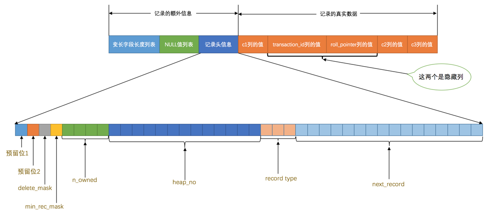

[TOC]
这篇文章主要对Mysql是怎样运行的进行提炼总结以及补充
MySQL 的存储引擎
常用的存储引擎有：ARCHIVE、BLACKHOLE、InnoDB、MyISAM等，最常用的就是InnoDB 和MyISAM，其中InnoDB 是MySQL 默认的存储引擎，主要研究的就是 InnoDB
InnoDB 存储引擎行格式
InnoDB 存储引擎行格式，分别是Compact 、Redundant 、Dynamic 和Compressed，其中mysql5.6 默认使用 Compact，mysql 5.7 默认使用Dynamic
额外信息
-
变长字段长度列表
MySQL 支持一些变长的数据类型，比如VARCHAR(M) 、VARBINARY(M) 、各种TEXT 类型，各种BLOB 类型，把拥有这些数据类型的列称为变长字段，变长字段中存储多少字节的数据是不固定的，所以我们在存储真实数据的时候需要顺便把这些数据占用的字节数也存起来,把所有变长字段的真实数据占用的字节长度都存放在记录的开头部位，从而形成一个变长字段长度列表，各变长字段数据占用的字节数按照列的顺序逆序存放
-
NULL值列表
把允许为null的列，按照列的顺序逆序排列，每个允许存储NULL 的列对应一个二进制位，二进制位的值为1 时，代表该列的值为NULL 。 二进制位的值为0 时，代表该列的值不为NULL 。 MySQL 规定NULL值列表必须用整数个字节的位表示，如果使用的二进制位个数不是整数个字节，则在字节的高位补0 ，如下图
-
记录头信息
除了变长字段长度列表、NULL值列表之外，还有一个用于描述记录的记录头信息，它是由固定的5 个字节组成。5 个字节也就是40 个二进制位，不同的位代表不同的意思，如图所示：

名称 大小（单位：bit 位） 描述 预留位1 1 没有使用 预留位2 1 没有使用 delete_mask 1 标记该记录是否被删除，值为0 的时候代表记录并没有被删除，为1 的时候代表记录被删除掉了 min_rec_mask 1 B+树的每层非叶子节点中的最小记录都会添加该标记 n_owned 4 表示当前记录拥有的记录数 heap_no 13 这个属性表示当前记录在本页中的位置 record_type 3 表示当前记录的类型， 0 表示普通记录， 1 表示B+树非叶节点记录， 2 表示最小记录， 3表示最大记录 next_record 16 表示下一条记录的相对位置
真实数据
-
隐藏数据
记录的真实数据除了我们自己定义的列的数据以外， MySQL 会为每个记录默认的添加一些列（也称为隐藏列），具体的列如下：DB_ROW_ID （行ID唯一标识一条记录）、DB_TRX_ID（事务ID）、DB_ROLL_PTR（回滚指针）。这里需要提一下InnoDB 表对主键的生成策略：优先使用用户自定义主键作为主键，如果用户没有定义主键，则选取一个Unique 键作为主键，如果表中连Unique 键都没有定义的话，则InnoDB 会为表默认添加一个名为row_id 的隐藏列作为主键 ，因此 DB_TRX_ID（事务ID）、DB_ROLL_PTR（回滚指针）是mysql一定包含，但DB_ROW_ID不一定，生成位置如下：
-
行溢出数据
我们知道对于VARCHAR(M) 类型的列最多可以占用65535 个字节。其中的M 代表该类型最多存储的字符数量。why？一个可变字段允许存储的最大字节数的长度最多只能用2个字节存储，而两个字节能表示的最大长度就是256*256=65536然后需要减去一个标志位。MySQL 对一条记录占用的最大存储空间是有限制的，除了BLOB 或者TEXT 类型的列之外，其他所有的列（不包括隐藏列和记录头信息）占用的字节长度加起来不能超过65535 个字节，也就是说2个字节用于存储真实数据的长度（最多）。所以MySQL 服务器建议我们把很长的字符存储类型改为TEXT 或者BLOB 的类型。
-
记录中的数据太多产生的溢出
MySQL 中磁盘和内存交互的基本单位是页，也就是说MySQL 是以页为基本单位来管理存储空间的，我们的记录都会被分配到某个页中存储。而一个页的大小一般是16KB ，也就是16384 字节，而一个VARCHAR(M) 类型的列就最多可以存储65532 个字节，这样就可能造成一个页存放不了一条记录的尴尬情况
对于Compact 和Reduntant 行格式来说，如果某一列中的数据非常多的话，在本记录的真实数据处只会存储该列的前768 个字节的数据和一个指向其他页的地址，然后把剩下的数据存放到其他页中，这个过程也叫做行溢出，存储超出768 字节的那些页面也被称为溢出页，如图

对于Dynamic 和Compressed 行格式 ，这俩行格式和Compact 行格式挺像，只不过在处理行溢出数据时有点儿分歧，它们不会在记录的真实数据处存储字段真实数据的前768 个字节，而是把所有的字节都存储到其他页面中，只在记录的真实数据处存储其他页面的地址，就像这样：

InnoDB数据页结构
页是InnoDB 管理存储空间的基本单位，一个页的大小一般是16KB 。InnoDB 为了不同的目的而设计了许多种不同类型的页，比如存放表空间头部信息的页，存放Insert Buffer信息的页，存放INODE 信息的页，存放undo 日志信息的页等。我们聚焦的是那些存放我们表中记录的那种类型的页，官方称这种存放记录的页为索引（ INDEX ）页。数据页代表的这块16KB 大小的存储空间可以被划分为多个部分，不同部分有不同的功能，各个部分如图所示：
记录在页中的存储
我们自己存储的记录会按照我们指定的行格式存储到User Records 部分，那么行在页中是怎么存储的呢？这时候就用到了行中的记录头信息
1、heap_no 这个属性表示当前记录在本页中的位置，heap_no 值为0 和1由mysql自动生成，所以有时候也称为伪记录或者虚拟记录。这两个伪记录一个代表最小记录，一个代表最大记录
由于这两条记录不是我们自己定义的记录，所以它们并不存放在页的User Records 部分，他们被单独放在一个称为Infimum + Supremum 的部分。
2、next_record，它表示从当前记录的真实数据到下一条记录的真实数据的地址偏移量。比方说第一条记录的next_record 值为32 ，意味着从第一条记录的真实数据的地址处向后找32 个字节便是下一条记录的真实数据。这就是链表！！！，可以通过一条记录找到它的下一条记录。但是需要注意注意再注意的一点是， 下一条记录指得并不是按照我们插入顺序的下一条记录，而是按照主键值由小到大的顺序的下一条记录。而且规定 Infimum记录（也就是最小记录） 的下一条记录就是本页中主键值最小的用户记录，而本页中主键值最大的用户记录的下一条记录就是 Supremum记录（也就是最大记录）

显然记录按照主键从小到大的顺序形成了一个单链表
最大记录的next_record 的值为0 ，这也就是说最大记录是没有下一条记录了，它是这个单链表中的最后一个节点。如果从中删除掉一条记录，这个链表也是会跟着变化的，比如我们把第2条记录删掉：

从图中可以看出来，删除第2条记录前后主要发生了这些变化：
-
第2条记录并没有从存储空间中移除，而是把该条记录的delete_mask 值设置为1
-
第2条记录的next_record 值变为了0，意味着该记录没有下一条记录了。
-
第1条记录的next_record 指向了第3条记录。
-
还有一点你可能忽略了，就是最大记录的n_owned 值从5 变成了4 ，关于这一点的变化我们稍后会详细说明的。所以，不论我们怎么对页中的记录做增删改操作，InnoDB始终会维护一条记录的单链表，链表中的各个节点是按照主键值由小到大的顺序连接起来的。
Page Directory（页目录）
目录的制作过程是这样的：
- 将所有正常的记录（包括最大和最小记录，不包括标记为已删除的记录）划分为几个组。
- 每个组的最后一条记录（也就是组内最大的那条记录）的头信息中的n_owned 属性表示该记录拥有多少条记录，也就是该组内共有几条记录。
- 将每个组的最后一条记录的地址偏移量单独提取出来按顺序存储到靠近页的尾部的地方，这个地方就是所谓的Page Directory ，也就是页目录 页面目录中的这些地址偏移量被称为槽（英文名： Slot ），所以这个页面目录就是由槽组成的。
比方说现在的page_demo 表中正常的记录共有6条， InnoDB 会把它们分成两组，第一组中只有一个最小记录，第二组中是剩余的5条记录，看下边的示意图：

从这个图中我们需要注意这么几点：
- 现在页目录部分中有两个槽，也就意味着我们的记录被分成了两个组， 槽1 中的值是112 ，代表最大记录 的地址偏移量（就是从页面的0字节开始数，数112个字节）； 槽0 中的值是99 ，代表最小记录的地址偏移 量。
- 注意最小和最大记录的头信息中的n_owned 属性
- 最小记录的n_owned 值为1 ，这就代表着以最小记录结尾的这个分组中只有1 条记录，也就是最小记录 本身。
- 最大记录的n_owned 值为5 ，这就代表着以最大记录结尾的这个分组中只有5 条记录，包括最大记录本 身还有我们自己插入的4 条记录。
用图表示就是：
为什么最小记录的n_owned 值为1，而最大记录的n_owned 值为5 呢，这里头有什么猫腻么？ 是的，设计InnoDB 的大叔们对每个分组中的记录条数是有规定的：对于最小记录所在的分组只能有 1 条记录， 最大记录所在的分组拥有的记录条数只能在 1~8 条之间，剩下的分组中记录的条数范围只能在是 4~8 条之间。 所以分组是按照下边的步骤进行的：
- 初始情况下一个数据页里只有最小记录和最大记录两条记录，它们分属于两个分组。
- 之后每插入一条记录，都会从页目录中找到主键值比本记录的主键值大并且差值最小的槽，然后把该槽对 应的记录的n_owned 值加1，表示本组内又添加了一条记录，直到该组中的记录数等于8个。
- 在一个组中的记录数等于8个后再插入一条记录时，会将组中的记录拆分成两个组，一个组中4条记录，另一 个5条记录。这个过程会在页目录中新增一个槽来记录这个新增分组中最大的那条记录的偏移量。
了解了页目录的组成后，那么怎么就加快查找速度的过程呢？看下这个例子

比方说我们想找主键值为6 的记录，过程是这样的：
- 计算中间槽的位置： (0+4)/2=2 ，所以查看槽2 对应记录的主键值为8 ，又因为8 > 6 ，所以设置 high=2 ， low 保持不变。
- 重新计算中间槽的位置： (0+2)/2=1 ，所以查看槽1 对应的主键值为4 ，又因为4 < 6 ，所以设置 low=1 ， high 保持不变。
- 因为high - low 的值为1，所以确定主键值为5 的记录在槽2 对应的组中。此刻我们需要找到槽2 中主键 值最小的那条记录，然后沿着单向链表遍历槽2 中的记录。但是我们前边又说过，每个槽对应的记录都是该 组中主键值最大的记录，这里槽2 对应的记录是主键值为8 的记录，怎么定位一个组中最小的记录呢？别忘 了各个槽都是挨着的，我们可以很轻易的拿到槽1 对应的记录（主键值为4 ），该条记录的下一条记录就 是槽2 中主键值最小的记录，该记录的主键值为5 。所以我们可以从这条主键值为5 的记录出发，遍历槽 2 中的各条记录，直到找到主键值为6 的那条记录即可。由于一个组中包含的记录条数只能是1~8条，所以 遍历一个组中的记录的代价是很小的。
这就是典型的二分法哈哈，总结：
- 通过二分法确定该记录所在的槽，并找到该槽中主键值最小的那条记录。
- 通过记录的next_record 属性遍历该槽所在的组中的各个记录。
Page Header（页面头部）
设计InnoDB 的大叔们为了能得到一个数据页中存储的记录的状态信息，比如本页中已经存储了多少条记录，第一条记录的地址是什么，页目录中存储了多少个槽等等，特意在页中定义了一个叫Page Header 的部分，它是页结构的第二部分，这个部分占用固定的56 个字节，专门存储各种状态信息，具体各个字节都是干嘛的看下
| 名称 | 占用空间大小 | 描述 |
|---|---|---|
| PAGE_N_DIR_SLOTS | 2 字节 | 在页目录中的槽数量 |
| PAGE_HEAP_TOP | 2 字节 | 还未使用的空间最小地址，也就是说从该地址之后就是Free Space |
| PAGE_N_HEAP | 2 字节 | 本页中的记录的数量（包括最小和最大记录以及标记为删除的记录） |
| PAGE_FREE | 2 字节 | 第一个已经标记为删除的记录地址（各个已删除的记录通过next_record 也会组成一个单链表，这个单链表中的记录可以被重新利用） |
| PAGE_GARBAGE | 2 字节 | 已删除记录占用的字节数 |
| PAGE_LAST_INSERT | 2 字节 | 最后插入记录的位置 |
| PAGE_DIRECTION | 2 字节 | 记录插入的方向 |
| PAGE_N_DIRECTION | 2 字节 | 一个方向连续插入的记录数量 |
| PAGE_N_RECS | 2 字节 | 该页中记录的数量（不包括最小和最大记录以及被标记为删除的记录） |
| PAGE_MAX_TRX_ID | 8 字节 | 修改当前页的最大事务ID，该值仅在二级索引中定义 |
| PAGE_LEVEL | 2 字节 | 当前页在B+树中所处的层级 |
| PAGE_INDEX_ID | 8 字节 | 索引ID，表示当前页属于哪个索引 |
| PAGE_BTR_SEG_LEAF | 10 字节 | B+树叶子段的头部信息，仅在B+树的Root页定义 |
| PAGE_BTR_SEG_TOP | 10 字节 | B+树非叶子段的头部信息，仅在B+树的Root页定义 |
- PAGE_DIRECTION 假如新插入的一条记录的主键值比上一条记录的主键值大，我们说这条记录的插入方向是右边，反之则是左 边。用来表示最后一条记录插入方向的状态就是PAGE_DIRECTION 。
- PAGE_N_DIRECTION 假设连续几次插入新记录的方向都是一致的， InnoDB 会把沿着同一个方向插入记录的条数记下来，这个条 数就用PAGE_N_DIRECTION 这个状态表示。当然，如果最后一条记录的插入方向改变了的话，这个状态的值 会被清零重新统计。
File Header（文件头部）
Page Header 是专门针对数据页记录的各种状态信息，比方说页里头有多少个记录了呀，有多少个槽了呀。我们现在描述的File Header 针对各种类型的页都通用，也就是说不同类型的页都会以File Header 作为第一个组成部分，它描述了一些针对各种页都通用的一些信息，比方说这个页的编号是多少，它的上一个页、下一个页 这个部分占用固定的38 个字节，是由下边这些内容组成的
| 名称 | 占用空间大小 | 描述 |
|---|---|---|
| FIL_PAGE_SPACE_OR_CHKSUM | 4 字节 | 页的校验和（checksum值） |
| FIL_PAGE_OFFSET | 4 字节 | 页号，InnoDB 通过页号来可以唯一定位一个页 |
| FIL_PAGE_PREV | 4 字节 | 上一个页的页号 |
| FIL_PAGE_NEXT | 4 字节 | 下一个页的页号 |
| FIL_PAGE_LSN | 8 字节 | 页面被最后修改时对应的日志序列位置（英文名是：Log SequenceNumber） |
| FIL_PAGE_TYPE | 2 字节 | 该页的类型 |
| FIL_PAGE_FILE_FLUSH_LSN | 8 字节 | 仅在系统表空间的一个页中定义，代表文件至少被刷新到了对应的LSN值 |
| FIL_PAGE_ARCH_LOG_NO_OR_SPACE_ID | 4 字节 | 页属于哪个表空间 |
详解：
-
FIL_PAGE_SPACE_OR_CHKSUM
这个代表当前页面的校验和（checksum）。啥是个校验和？就是对于一个很长很长的字节串来说，我们会 通过某种算法来计算一个比较短的值来代表这个很长的字节串，这个比较短的值就称为校验和。这样在比 较两个很长的字节串之前先比较这两个长字节串的校验和，如果校验和都不一样两个长字节串肯定是不同 的，所以省去了直接比较两个比较长的字节串的时间损耗。
-
FIL_PAGE_TYPE
这个代表当前页的类型，我们前边说过， InnoDB 为了不同的目的而把页分为不同的类型，我们上边介绍的 其实都是存储记录的数据页，其实还有很多别的类型的页，我们存放记录的数据页的类型其实是FIL_PAGE_INDEX ，也就是所谓的索引页。
-
FIL_PAGE_PREV 和FIL_PAGE_NEXT
我们前边强调过， InnoDB 都是以页为单位存放数据的，有时候我们存放某种类型的数据占用的空间非常大 （比方说一张表中可以有成千上万条记录）， InnoDB 可能不可以一次性为这么多数据分配一个非常大的存 储空间，如果分散到多个不连续的页中存储的话需要把这些页关联起来， FIL_PAGE_PREV 和FIL_PAGE_NEXT 就分别代表本页的上一个和下一个页的页号。这样通过建立一个双向链表把许许多多的页就都串联起来了， 而无需这些页在物理上真正连着
总结
- InnoDB为了不同的目的而设计了不同类型的页，我们把用于存放记录的页叫做数据页。
- 一个数据页可以被大致划分为7个部分，分别是
- File Header ，表示页的一些通用信息，占固定的38字节。
- Page Header ，表示数据页专有的一些信息，占固定的56个字节。
- Infimum + Supremum ，两个虚拟的伪记录，分别表示页中的最小和最大记录，占固定的26 个字节。 User Records ：真实存储我们插入的记录的部分，大小不固定。
- Free Space ：页中尚未使用的部分，大小不确定。
- Page Directory ：页中的某些记录相对位置，也就是各个槽在页面中的地址偏移量，大小不固定，插 入的记录越多，这个部分占用的空间越多。
- File Trailer ：用于检验页是否完整的部分，占用固定的8个字节。
- 每个记录的头信息中都有一个next_record 属性，从而使页中的所有记录串联成一个单链表。
- InnoDB 会为把页中的记录划分为若干个组，每个组的最后一个记录的地址偏移量作为一个槽，存放在 Page Directory 中，所以在一个页中根据主键查找记录是非常快的，分为两步：
- 通过二分法确定该记录所在的槽。
- 通过记录的next_record属性遍历该槽所在的组中的各个记录。
- 每个数据页的File Header 部分都有上一个和下一个页的编号，所以所有的数据页会组成一个双链表。
- 为保证从内存中同步到磁盘的页的完整性，在页的首部和尾部都会存储页中数据的校验和和页面最后修改时 对应的LSN 值，如果首部和尾部的校验和和LSN 值校验不成功的话，就说明同步过程出现了问题。
B+树索引
各个数据页可以组成一个双向链表，而每个数据页中的记录会按照主键值从小到大的顺序组成一个单向链表，每个数据页都会为存储在它里边儿的记录生成一个页目录，在通过主键查找某条记录的时候可以在页目录中使用二分法快速定位到对应的槽，然后再遍历该槽对应分组中的记录即可快速找到指定的记录。页和记录的关系示意图如下：
新建一个index_demo 表，该表有2个INT 类型的列，1个CHAR(1) 类型的列，而且我们规定了c1 列为主键，这个表使用Compact 行格式来实际存储记录的。为了我们理解上的方便，我们简化了一下index_demo 表的行格式示 意图：

把一些记录放到页里边的示意图就是：

一个简单的索引方案
我们在根据某个搜索条件查找一些记录时为什么要遍历所有的数据页呢？因为各个页中的记录并没有规律，我们并不知道我们的搜索条件匹配哪些页中的记录，所以不得不依次遍历所有的数据页
所以如果我们想快速的定位到需要查找的记录在哪些数据页中该咋办？还记得我们为根据主键值快速定位一条记录在页中的位置而设立的页目录么？我们也可以想办法为快速定位记录所在的数据页而建立一个别的目录，建这个目录必须完成下边这些事儿：
-
下一个数据页中用户记录的主键值必须大于上一个页中用户记录的主键值。
我们这里需要做一个假设：假设我们的每个数据页最多能存放3条记录（实际上一个数据页非常大，可以存放下好多记录）。有了这个假设之后我们向index_demo 表插入3条记录：
mysql> INSERT INTO index_demo VALUES(1, 4, 'u'), (3, 9, 'd'), (5, 3, 'y');那么这些记录已经按照主键值的大小串联成一个单向链表了，如图所示：
此时我们再来插入一条记录:
INSERT INTO index_demo VALUES(4, 4, 'a');
因为页10 最多只能放3条记录，所以我们不得不再分配一个新页：
 新分配的数据页编号可能并不是连续的，也就是说我们使用的这些页在存储空间里可能并不挨着。它们只是通过维护着上一个页和下一个页的编号而建立了链表关系
新分配的数据页编号可能并不是连续的，也就是说我们使用的这些页在存储空间里可能并不挨着。它们只是通过维护着上一个页和下一个页的编号而建立了链表关系
页10 中用户记录最大的主键值是5 ，而页28 中有一条记录的主键值是4 ，因为5>4 ，所以这就不符合下一个数据页中用户记录的主键值必须大于上一个页中用户记录的主键值的要求，所以在插入主键值为4 的记录的时候需要伴随着一次记录移动，也就是把主键值为5 的记录移动到页28 中，然后再把主键值为4 的记录插入到页10 中，这个过程的示意图如下:

这个过程表明了在对页中的记录进行增删改操作的过程中，我们必须通过一些诸如记录移动的操作来始终保证这个状态一直成立：下一个数据页中用户记录的主键值必须大于上一个页中用户记录的主键值。这个过程我们也可以称为页分裂。
-
给所有的页建立一个目录项
由于数据页的编号可能并不是连续的，所以在向index_demo 表中插入许多条记录后，可能是这样的效果：

因为这些16KB 的页在物理存储上可能并不挨着，所以如果想从这么多页中根据主键值快速定位某些记录所在的页，我们需要给它们做个目录，每个页对应一个目录项，每个目录项包括下边两个部分：
- 页的用户记录中最小的主键值，我们用key 来表示。
- 页号，我们用page_no 表示。
所以我们为上边几个页做好的目录就像这样子：
以页28 为例，它对应目录项2 ，这个目录项中包含着该页的页号28 以及该页中用户记录的最小主键值5 。我们只需要把几个目录项在物理存储器上连续存储，比如把他们放到一个数组里，就可以实现根据主键值快速查找某条记录的功能了。比方说我们想找主键值为20 的记录，具体查找过程分两步：
- 先从目录项中根据二分法快速确定出主键值为20 的记录在目录项3 中（因为 12 < 20 < 209 ），它对应的页是页9 。
- 再根据前边说的在页中查找记录的方式去页9 中定位具体的记录。
至此，针对数据页做的简易目录就搞定了。不过忘了说了，这个目录有一个别名，称为索引
InnoDB中的索引方案
上边之所以称为一个简易的索引方案，是因为我们为了在根据主键值进行查找时使用二分法快速定位具体的目录项而假设所有目录项都可以在物理存储器上连续存储，但是这样做有几个问题：
- InnoDB 是使用页来作为管理存储空间的基本单位，也就是最多能保证16KB 的连续存储空间，而随着表中记录数量的增多，需要非常大的连续的存储空间才能把所有的目录项都放下，这对记录数量非常多的表是不现实的。
- 我们时常会对记录进行增删，假设我们把页28 中的记录都删除了， 页28 也就没有存在的必要了，那意味着目录项2 也就没有存在的必要了，这就需要把目录项2 后的目录项都向前移动一下，这种牵一发而动全身的设计不是什么好主意～
所以，设计InnoDB 的大叔们需要一种可以灵活管理所有目录项的方式。他们灵光乍现，忽然发现这些目录项其实长得跟我们的用户记录差不多，只不过目录项中的两个列是主键和页号而已，所以他们复用了之前存储用户记录的数据页来存储目录项，为了和用户记录做一下区分，我们把这些用来表示目录项的记录称为目录项记录。那InnoDB 怎么区分一条记录是普通的用户记录还是目录项记录呢？别忘了记录头信息里的 record_type 属性，它的各个取值代表的意思如下：
- 0 ：普通的用户记录
- 1 ：目录项记录
- 2 ：最小记录
- 3 ：最大记录 哈哈，原来这个值为1 的record_type 是这个意思呀，我们把前边使用到的目录项放到数据页中的样子就是这样：

从图中可以看出来，我们新分配了一个编号为30 的页来专门存储目录项记录。这里再次强调一遍目录项记录和普通的用户记录的不同点：
- 目录项记录的record_type 值是1，而普通用户记录的record_type 值是0。
- 目录项记录只有主键值和页的编号两个列，而普通的用户记录的列是用户自己定义的，可能包含很多列，另外还有InnoDB 自己添加的隐藏列。
- 还记得我们之前在唠叨记录头信息的时候说过一个叫min_rec_mask 的属性么，只有在存储目录项记录的页中的主键值最小的目录项记录的min_rec_mask 值为1 ，其他别的记录的min_rec_mask 值都是0 。
除了上述几点外，这两者就没啥差别了，它们用的是一样的数据页，页的组成结构也是一样一样的（就是我们前边介绍过的7个部分），都会为主键值生成Page Directory （页目录），从而在按照主键值进行查找时可以使用二分法来加快查询速度。现在以查找主键为20 的记录为例，根据某个主键值去查找记录的步骤就可以大致拆分成下边两步:
- 先到存储目录项记录的页，也就是页30 中通过二分法快速定位到对应目录项，因为12 < 20 < 209 ，所以定位到对应的记录所在的页就是页9 。
- 再到存储用户记录的页9 中根据二分法快速定位到主键值为20 的用户记录
虽然说目录项记录中只存储主键值和对应的页号，比用户记录需要的存储空间小多了，但是不论怎么说一个页只有16KB 大小，能存放的目录项记录也是有限的，那如果表中的数据太多，以至于一个数据页不足以存放所有的目录项记录，该咋办呢？
当然是再多整一个存储目录项记录的页喽～ 为了大家更好的理解新分配一个目录项记录页的过程，我们假设一个存储目录项记录的页最多只能存放4条目录项记录，所以如果此时我们再向上图中插入一条主键值为320 的用户记录的话，那就需要分配一个新的存储目录项记录的页喽：

从图中可以看出，我们插入了一条主键值为320 的用户记录之后需要两个新的数据页：
- 为存储该用户记录而新生成了页31 。
- 因为原先存储目录项记录的页30 的容量已满（我们前边假设只能存储4条目录项记录），所以不得不需要一个新的页32 来存放页31 对应的目录项。
现在因为存储目录项记录的页不止一个，所以如果我们想根据主键值查找一条用户记录大致需要3个步骤，以查找主键值为20 的记录为例：
- 确定目录项记录页 我们现在的存储目录项记录的页有两个，即页30 和页32 ，又因为页30 表示的目录项的主键值的范围是[1, 320) ， 页32 表示的目录项的主键值不小于320 ，所以主键值为20 的记录对应的目录项记录在页30中。
- 通过目录项记录页确定用户记录真实所在的页。
- 在真实存储用户记录的页中定位到具体的记录。
那么问题来了，在这个查询步骤的第1步中我们需要定位存储目录项记录的页，但是这些页在存储空间中也可能不挨着，如果我们表中的数据非常多则会产生很多存储目录项记录的页，那我们怎么根据主键值快速定位一个存储目录项记录的页呢？其实也简单，为这些存储目录项记录的页再生成一个更高级的目录，就像是一个多级目录一样，大目录里嵌套小目录，小目录里才是实际的数据，所以现在各个页的示意图就是这样子

如图，我们生成了一个存储更高级目录项的页33 ，这个页中的两条记录分别代表页30 和页32 ，如果用户记录的主键值在[1, 320) 之间，则到页30 中查找更详细的目录项记录，如果主键值不小于320 的话，就到页32中查找更详细的目录项记录。随着表中记录的增加，这个目录的层级会继续增加，如果简化一下，那么我们可以用下边这个图来描述它:

这他妈的就是B+树了！！！
聚簇索引
我们上边介绍的B+ 树本身就是一个目录，或者说本身就是一个索引。它有两个特点：
- 使用记录主键值的大小进行记录和页的排序，这包括三个方面的含义：
- 页内的记录是按照主键的大小顺序排成一个单向链表。
- 各个存放用户记录的页也是根据页中用户记录的主键大小顺序排成一个双向链表。
- 存放目录项记录的页分为不同的层次，在同一层次中的页也是根据页中目录项记录的主键大小顺序排成一个双向链表。
- B+ 树的叶子节点存储的是完整的用户记录。 所谓完整的用户记录，就是指这个记录中存储了所有列的值（包括隐藏列）。
我们把具有这两种特性的B+ 树称为聚簇索引，所有完整的用户记录都存放在这个聚簇索引的叶子节点处。这种聚簇索引并不需要我们在MySQL 语句中显式的使用INDEX 语句去创建（后边会介绍索引相关的语句），InnoDB 存储引擎会自动的为我们创建聚簇索引。另外有趣的一点是，在InnoDB 存储引擎中， 聚簇索引就是数据的存储方式（所有的用户记录都存储在了叶子节点），也就是所谓的索引即数据，数据即索引。
二级索引
大家有木有发现，上边介绍的聚簇索引只能在搜索条件是主键值时才能发挥作用，因为B+ 树中的数据都是按照主键进行排序的。那如果我们想以别的列作为搜索条件该咋办呢？难道只能从头到尾沿着链表依次遍历记录么？不，我们可以多建几棵B+ 树，不同的B+ 树中的数据采用不同的排序规则。比方说我们用c2 列的大小作为数据页、页中记录的排序规则，再建一棵B+ 树，效果如下图所示：

这个B+ 树与上边介绍的聚簇索引有几处不同：
- 使用记录c2 列的大小进行记录和页的排序，这包括三个方面的含义：
- 页内的记录是按照c2 列的大小顺序排成一个单向链表。
- 各个存放用户记录的页也是根据页中记录的c2 列大小顺序排成一个双向链表。
- 存放目录项记录的页分为不同的层次，在同一层次中的页也是根据页中目录项记录的c2 列大小顺序排成一个双向链表。
- B+ 树的叶子节点存储的并不是完整的用户记录，而只是c2列+主键这两个列的值。
- 目录项记录中不再是主键+页号的搭配，而变成了c2列+页号的搭配。
所以如果我们现在想通过c2 列的值查找某些记录的话就可以使用我们刚刚建好的这个B+ 树了。以查找c2 列的值为4 的记录为例，查找过程如下：
- 确定目录项记录页根据根页面，也就是页44 ，可以快速定位到目录项记录所在的页为页42 （因为2 < 4 < 9 ）。
- 通过目录项记录页确定用户记录真实所在的页。 在页42 中可以快速定位到实际存储用户记录的页，但是由于c2 列并没有唯一性约束，所以c2 列值为4 的记录可能分布在多个数据页中，又因为2 < 4 ≤ 4 ，所以确定实际存储用户记录的页在页34 和页35 中。
- 在真实存储用户记录的页中定位到具体的记录。 到页34 和页35 中定位到具体的记录。
- 但是这个B+ 树的叶子节点中的记录只存储了c2 和c1 （也就是主键）两个列，所以我们必须再根据主键值去聚簇索引中再查找一遍完整的用户记录。
我们根据这个以c2 列大小排序的B+ 树只能确定我们要查找记录的主键值，所以如果我们想根据c2 列的值查找到完整的用户记录的话，仍然需要到聚簇索引中再查一遍，这个过程也被称为回表。也就是根据c2 列的值查询一条完整的用户记录需要使用到2 棵B+ 树！！！
因为这种按照非主键列建立的B+ 树需要一次回表操作才可以定位到完整的用户记录，所以这种B+ 树也被称为二级索引（英文名secondary index ），或者辅助索引。由于我们使用的是c2 列的大小作为B+ 树的排序规则，所以我们也称这个B+ 树为为c2列建立的索引。
联合索引
我们也可以同时以多个列的大小作为排序规则，也就是同时为多个列建立索引，比方说我们想让B+ 树按照c2和c3 列的大小进行排序，这个包含两层含义：
- 先把各个记录和页按照c2 列进行排序。
- 在记录的c2 列相同的情况下，采用c3 列进行排序

如图所示，我们需要注意一下几点：
- 每条目录项记录都由c2 、c3 、页号这三个部分组成，各条记录先按照c2 列的值进行排序，如果记录的c2 列相同，则按照c3 列的值进行排序。
- B+ 树叶子节点处的用户记录由c2 、c3 和主键c1 列组成。
千万要注意一点，以c2和c3列的大小为排序规则建立的B+树称为联合索引，本质上也是一个二级索引。
B+树索引的注意事项
根页面万年不动窝
一个B+树索引的根节点自诞生之日起，便不会再移动。这样只要我们对某个表建立一个索引，那么它的根节点的页号便会被记录到某个地方，然后凡是InnoDB 存储引擎需要用到这个索引的时候，都会从那个固定的地方取出根节点的页号，从而来访问这个索引。
内节点中目录项记录的唯一性
我们知道B+ 树索引的内节点中目录项记录的内容是索引列 + 页号的搭配，但是对于二级索引来说，为了让新插入记录能找到自己在哪个页里，我们需要保证在B+树的同一层内节点的目录项记录除页号这个字段以外是唯一的。所以对于二级索引的内节点的目录项记录的内容实际上是由三个部分构成的：
- 索引列的值
- 主键值
- 页号
也就是我们把主键值也添加到二级索引内节点中的目录项记录了，这样就能保证B+ 树每一层节点中各条目录项记录除页号这个字段外是唯一的，所以我们为c2 列建立二级索引后的示意图实际上应该是这样子的

一个页面最少存储2条记录
我们前边说过一个B+树只需要很少的层级就可以轻松存储数亿条记录，查询速度杠杠的！这是因为B+树本质上就是一个大的多层级目录，每经过一个目录时都会过滤掉许多无效的子目录，直到最后访问到存储真实数据的目录。那如果一个大的目录中只存放一个子目录是个啥效果呢？那就是目录层级非常非常非常多，而且最后的那个存放真实数据的目录中只能存放一条记录。所以InnoDB 的一个数据页至少可以存放两条记录，这也是我们之前唠叨记录行格式的时候说过一个结论（我们当时依据这个结论推导了表中只有一个列时该列在不发生行溢出的情况下最多能存储多少字节，忘了的话回去看看吧）。
MyISAM中的索引方案简单介绍
至此，我们介绍的都是InnoDB 存储引擎中的索引方案，我们有必要再简单介绍一下MyISAM 存储引擎中的索引方案。我们知道InnoDB 中索引即数据，也就是聚簇索引的那棵B+ 树的叶子节点中已经把所有完整的用户记录都包含了，而MyISAM 的索引方案虽然也使用B+树，但是却将索引和数据分开存储：
- 将表中的记录按照记录的插入顺序单独存储在一个文件中，称之为数据文件。这个文件并不划分为若干个数据页，有多少记录就往这个文件中塞多少记录就成了。我们可以通过行号而快速访问到一条记录。 MyISAM 记录也需要记录头信息来存储一些额外数据，我们以上边唠叨过的index_demo 表为例，看一下这个表中的记录使用MyISAM 作为存储引擎在存储空间中的表示：

由于在插入数据的时候并没有刻意按照主键大小排序，所以我们并不能在这些数据上使用二分法进行查找。
-
使用MyISAM 存储引擎的表会把索引信息另外存储到一个称为索引文件的另一个文件中。MyISAM 会单独为表的主键创建一个索引，只不过在索引的叶子节点中存储的不是完整的用户记录，而是主键值 + 行号的组合。也就是先通过索引找到对应的行号，再通过行号去找对应的记录！这一点和InnoDB 是完全不相同的，在InnoDB 存储引擎中，我们只需要根据主键值对聚簇索引进行一次查找就能找到对应的记录，而在MyISAM 中却需要进行一次回表操作，意味着MyISAM 中建立的索引相当于全部都是二级索引
-
如果有需要的话，我们也可以对其它的列分别建立索引或者建立联合索引，原理和InnoDB 中的索引差不多，不过在叶子节点处存储的是相应的列 + 行号。这些索引也全部都是二级索引
Myisam 和 InnoDB 区别
-
InnoDB 支持事务，MyISAM 不支持事务。这是 MySQL 将默认存储引擎从MyISAM 变成 InnoDB 的重要原因之一；
-
InnoDB 支持外键，而 MyISAM 不支持。对一个包含外键的 InnoDB 表转MYISAM 会失败；
-
InnoDB 是聚簇索引，MyISAM 是非聚簇索引。聚簇索引的文件存放在主键索引的叶子节点上，因此 InnoDB 必须要有主键，通过主键索引效率很高。但是辅助索引需要两次查询，先查询到主键，然后再通过主键查询到数据。因此，主键不应该过大，因为主键太大，其他索引也都会很大。而 MyISAM 是非聚集索引，数据文件是分离的，索引保存的是数据文件的指针。主键索引和辅助索引是独立的。
-
InnoDB 不保存表的具体行数，执行 select count(*) from table 时需要全表扫描。而MyISAM 用一个变量保存了整个表的行数，执行上述语句时只需要读出该变量即可，速度很快；
-
InnoDB 最小的锁粒度是行锁，MyISAM 最小的锁粒度是表锁。一个更新语句会锁住整张表，导致其他查询和更新都会被阻塞，因此并发访问受限。这也是 MySQL 将默认存储引擎从 MyISAM 变成 InnoDB 的重要原因之一；
-
MyISAM：允许没有任何索引和主键的表存在，索引都是保存行的地址。InnoDB：如果没有设定主键或者非空唯一索引，就会自动生成一个6字节的主键(用户不可见)
B+树索引的使用
B+ 树索引总结:
- 每个索引都对应一棵B+ 树， B+ 树分为好多层，最下边一层是叶子节点，其余的是内节点。所有用户记录都存储在B+ 树的叶子节点，所有目录项记录都存储在内节点。
- InnoDB 存储引擎会自动为主键（如果没有它会自动帮我们添加）建立聚簇索引，聚簇索引的叶子节点包含完整的用户记录。
- 我们可以为自己感兴趣的列建立二级索引， 二级索引的叶子节点包含的用户记录由索引列 + 主键组成，所以如果想通过二级索引来查找完整的用户记录的话，需要通过回表操作，也就是在通过二级索引找到主键值之后再到聚簇索引中查找完整的用户记录。
- B+ 树中每层节点都是按照索引列值
从小到大的顺序排序而组成了双向链表，而且每个页内的记录（不论是用户记录还是目录项记录）都是按照索引列的值从小到大的顺序而形成了一个单链表。如果是联合索引的话，则页面和记录先按照联合索引前边的列排序，如果该列值相同，再按照联合索引后边的列排序。 - 通过索引查找记录是从B+ 树的根节点开始，一层一层向下搜索。由于每个页面都按照索引列的值建立了Page Directory （页目录），所以在这些页面中的查找非常快。
索引的代价
- 空间上的代价 这个是显而易见的，每建立一个索引都要为它建立一棵B+ 树，每一棵B+ 树的每一个节点都是一个数据页，一个页默认会占用16KB 的存储空间，一棵很大的B+ 树由许多数据页组成，那可是很大的一片存储空间呢。
- 时间上的代价 每次对表中的数据进行增、删、改操作时，都需要去修改各个B+ 树索引。而且我们讲过， B+ 树每层节点都是按照索引列的值从小到大的顺序排序而组成了双向链表。不论是叶子节点中的记录，还是内节点中的记录（也就是不论是用户记录还是目录项记录）都是按照索引列的值从小到大的顺序而形成了一个单向链表。而 增、删、改操作可能会对节点和记录的排序造成破坏，所以存储引擎需要额外的时间进行一些记录移位，页面分裂、页面回收啥的操作来维护好节点和记录的排序。如果我们建了许多索引，每个索引对应的B+ 树都要进行相关的维护操作，这还能不给性能拖后腿么？
所以说，一个表上索引建的越多，就会占用越多的存储空间，在增删改记录的时候性能就越差。
B+树索引适用的条件
下边我们将唠叨许多种让B+ 树索引发挥最大效能的技巧和注意事项，先创建一个person_info表，这个表是用来存储人的一些基本信息的：
CREATE TABLE person_info(
id INT NOT NULL auto_increment,
name VARCHAR(100) NOT NULL,
birthday DATE NOT NULL,
phone_number CHAR(11) NOT NULL,
country varchar(100) NOT NULL,
PRIMARY KEY (id),
KEY idx_name_birthday_phone_number (name, birthday, phone_number)
);
对于这个person_info 表我们需要注意两点：
- 表中的主键是id 列，它存储一个自动递增的整数。所以InnoDB 存储引擎会自动为id 列建立聚簇索引。
- 我们额外定义了一个二级索引idx_name_birthday_phone_number ，它是由3个列组成的联合索引。所以在这个索引对应的B+ 树的叶子节点处存储的用户记录只保留name 、birthday 、phone_number 这三个列的值以及主键id 的值，并不会保存country 列的值。
person_info 表会为聚簇索引和idx_name_birthday_phone_number 索引建立2棵B+ 树。下边我们画一下索引idx_name_birthday_phone_number 的示意图，不过既然我们已经掌握了InnoDB 的B+ 树索引原理，那我们在画图的时候为了让图更加清晰，所以在省略一些不必要的部分，比如记录的额外信息，各页面的页号等等，其中内节点中目录项记录的页号信息我们用箭头来代替，在记录结构中只保留name 、birthday 、phone_number 、id 这四个列的真实数据值

从图中可以看出这个idx_name_birthday_phone_number 索引对应的B+ 树中页面和记录的排序方式就是这的：
- 先按照name 列的值进行排序。
- 如果name 列的值相同，则按照birthday 列的值进行排序。
- 如果birthday 列的值也相同，则按照phone_number 的值进行排序
全值匹配
如果我们的搜索条件中的列和索引列一致的话，这种情况就称为全值匹配,例如：
SELECT * FROM person_info WHERE name = 'Ashburn' AND birthday = '1990-09-27' AND phone_number = '15123983239';
这个毫无疑问会走索引，但WHERE 子句中的几个搜索条件的顺序对查询结果有啥影响么？也就是说如果我们调换name 、birthday 、phone_number 这几个搜索列的顺序对查询的执行过程有影响么？例如：
SELECT * FROM person_info WHERE birthday = '1990-09-27' AND phone_number = '15123983239' AND name = 'Ashburn';
答案是：没影响哈。MySQL 有查询优化器，会分析这些搜索条件并且按照可以使用的索引中列的顺序来决定先使用哪个搜索条件，后使用哪个搜索条件。
匹配左边的列
其实在我们的搜索语句中也可以不用包含全部联合索引中的列，只包含左边的就行，比方说下边的查询语句：
SELECT * FROM person_info WHERE name = 'Ashburn';
或者包含多个左边的列也行：
SELECT * FROM person_info WHERE name = 'Ashburn' AND birthday = '1990-09-27';
那这条查询语句能用到索引吗？
SELECT * FROM person_info WHERE birthday = '1990-09-27';
答案是用不到，因为B+ 树的数据页和记录先是按照name 列的值排序的，在name 列的值相同的情况下才使用birthday 列进行排序，也就是说name 列的值不同的记录中birthday 的值可能是无序的需要特别注意的一点是，如果我们想使用联合索引中尽可能多的列，搜索条件中的各个列必须是联合索引中从最左边开始连续的列。比方说联合索引idx_name_birthday_phone_number 中列的定义顺序是name 、birthday 、phone_number ，如果我们的搜索条件中只有name 和phone_number ，而没有中间的birthday ，比方说这样：
SELECT * FROM person_info WHERE name = 'Ashburn' AND phone_number = '15123983239';
这样只能用到name 列的索引， birthday 和phone_number 的索引就用不上了，因为name 值相同的记录先按照birthday 的值进行排序， birthday 值相同的记录才按照phone_number 值进行排序
匹配列前缀
为某个列建立索引的意思其实就是在对应的B+ 树的记录中使用该列的值进行排序，比方说person_info 表上建立的联合索引idx_name_birthday_phone_number 会先用name 列的值进行排序，字符串排序使用的当然就是字典序，也就是说这些字符串的前n个字符，也就是前缀都是排好序的，所以对于字符串类型的索引列来说，我们只匹配它的前缀也是可以快速定位记录的，例如：
走索引 SELECT * FROM person_info WHERE name LIKE 'As%';
不走索引 SELECT * FROM person_info WHERE name LIKE '%As%';
匹配范围值
idx_name_birthday_phone_number 索引的B+ 树示意图，所有记录都是按照索引列的值从小到大的顺序排好序的，所以这极大的方便我们查找索引列的值在某个范围内的记录。比方说下边这个查询语句
SELECT * FROM person_info WHERE name > 'Asa' AND name < 'Barlow';
由于B+ 树中的数据页和记录是先按name 列排序的，所以我们上边的查询过程其实是这样的：
- 找到name 值为Asa 的记录(查找到范围的下限)。
- 遍历链表找到name 值为Barlow 的记录（查找到范围的上限）由于所有记录都是由链表连起来的（记录之间用单链表，数据页之间用双链表）
- 找到这些记录的主键值，再到聚簇索引中回表查找完整的记录。
注意
如果对多个列同时进行范围查找的话，只有对索引最左边的那个列进行范围查找的时候才能用到B+ 树索引，
SELECT * FROM person_info WHERE name > 'Asa' AND name < 'Barlow' AND birthday > '1980-01-01';
上边这个查询可以分成两个部分：
- 通过条件name > ‘Asa’ AND name < ‘Barlow’ 来对name 进行范围，查找的结果可能有多条name 值不同的 记录
- 对这些name 值不同的记录继续通过birthday > ‘1980-01-01’ 条件继续过滤。 这样子对于联合索引idx_name_birthday_phone_number 来说，只能用到name 列的部分，而用不到birthday 列的部分，因为只有name 值相同的情况下才能用birthday 列的值进行排序，而这个查询中通过name 进行范围查找的记录中可能并不是按照birthday 列进行排序的，所以在搜索条件中继续以birthday 列进行查找时是用不到这个B+ 树索引的。
而与上面相反的是，精确匹配某一列并范围匹配另外一列,如
SELECT * FROM person_info WHERE name = 'Ashburn' AND birthday > '1980-01-01' AND birthday < '2000-12-31' AND phone_number > '15100000000';
这个查询的条件可以分为3个部分：
- name = ‘Ashburn’ ，对name 列进行精确查找，当然可以使用B+ 树索引了。
- birthday > ‘1980-01-01’ AND birthday < ‘2000-12-31’ ，由于name 列是精确查找，所以通过name =‘Ashburn’ 条件查找后得到的结果的name 值都是相同的，它们会再按照birthday 的值进行排序。所以此时对birthday 列进行范围查找是可以用到B+ 树索引的。
- phone_number > ‘15100000000’ ，通过birthday 的范围查找的记录的birthday 的值可能不同，所以这个条件无法再利用B+ 树索引了，只能遍历上一步查询得到的记录。
用于排序
我们在写查询语句的时候经常需要对查询出来的记录通过ORDER BY 子句按照某种规则进行排序。一般情况下，我们只能把记录都加载到内存中，再用一些排序算法，比如快速排序、归并排序等等在内存中对这些记录进行排序，有的时候可能查询的结果集太大以至于不能在内存中进行排序的话，还可能暂时借助磁盘的空间来存放中间结果，排序操作完成后再把排好序的结果集返回到客户端。在MySQL 中，把这种在内存中或者磁盘上进行排序的方式统称为文件排序（英文名： filesort ），文件排序是很慢的。但是如果ORDER BY 子句里使用到了我们的索引列，就有可能省去在内存或文件中排序的步骤，比如下边这个简单的查询语句
SELECT * FROM person_info ORDER BY name, birthday, phone_number LIMIT 10;
因为有idx_name_birthday_phone_number 索引，所以直接从索引中提取数据，然后进行回表操作取出所有数据
对于联合索引有个问题需要注意， ORDER BY 的子句后边的列的顺序也必须按照索引列的顺序给出，否则也不能使用索引，同理， ORDER BY name 、ORDER BY name, birthday 这种匹配索引左边的列的形式可以使用部分的B+ 树索引。当联合索引左边列的值为常量，也可以使用后边的列进行排序，比如这样
SELECT * FROM person_info WHERE name = 'A' ORDER BY birthday, phone_number LIMIT 10;
不可以使用索引进行排序的几种情况
ASC、DESC混用
对于使用联合索引进行排序的场景，我们要求各个排序列的排序顺序是一致的，也就是要么各个列都是ASC 规则 排序，要么都是DESC 规则排序。
如果查询中的各个排序列的排序顺序是一致的，比方说下边这两种情况：
- ORDER BY name, birthday LIMIT 10 这种情况直接从索引的最左边开始往右读10行记录就可以了。
- ORDER BY name DESC, birthday DESC LIMIT 10 ， 这种情况直接从索引的最右边开始往左读10行记录就可以了。
但是是先按照name 列进行升序排列，再按照birthday 列进行降序排列的话，比如说这样的查询语句：
SELECT * FROM person_info ORDER BY name, birthday DESC LIMIT 10;
就不能走索引
WHERE子句中出现非排序使用到的索引列
SELECT * FROM person_info WHERE country = 'China' ORDER BY name LIMIT 10;
这个查询只能先把符合搜索条件country = ‘China’ 的记录提取出来后再进行排序，使用不到索引。
SELECT * FROM person_info WHERE name = 'A' ORDER BY birthday, phone_number LIMIT 10;
虽然这个查询也有搜索条件，但是name = ‘A’ 可以使用到索引idx_name_birthday_phone_number ，而且过滤剩 下的记录还是按照birthday 、phone_number 列排序的，所以还是可以使用索引进行排序的
排序列包含非同一个索引的列
有时候用来排序的多个列不是一个索引里的，这种情况也不能使用索引进行排序，比方说：
SELECT * FROM person_info ORDER BY name, country LIMIT 10;
name 和country (即使country为索引列也不行)并不属于一个联合索引中的列，所以无法使用索引进行排序
排序列使用了复杂的表达式
SELECT * FROM person_info ORDER BY UPPER(name) LIMIT 10;
使用了UPPER 函数修饰过的列就不是单独的列了，这样就无法使用索引进行排序。
用于分组
SELECT name, birthday, phone_number, COUNT(*) FROM person_info GROUP BY name, birthday, phone_number
和使用B+ 树索引进行排序使用规则相同，分组列的顺序也需要和索引列的顺序一致，也可以只使用索引列中左边的列进行分组等
回表的代价
SELECT * FROM person_info WHERE name > 'Asa' AND name < 'Barlow';
在使用idx_name_birthday_phone_number 索引进行查询时大致可以分为这两个步骤：
- 从索引idx_name_birthday_phone_number 对应的B+ 树中取出name 值在Asa ～ Barlow 之间的用户记录。
- 由于索引idx_name_birthday_phone_number 对应的B+ 树用户记录中只包含name 、birthday 、 phone_number 、id 这4个字段，而查询列表是* ，意味着要查询表中所有字段，也就是还要包括country 字段。这时需要把从上一步中获取到的每一条记录的id 字段都到聚簇索引对应的B+ 树中找到完整的用户记录，也就是我们通常所说的回表，然后把完整的用户记录返回给查询用户。
由于索引idx_name_birthday_phone_number 对应的B+ 树中的记录首先会按照name 列的值进行排序，所以值在Asa ～ Barlow 之间的记录在磁盘中的存储是相连的，集中分布在一个或几个数据页中，我们可以很快的把这些连着的记录从磁盘中读出来，这种读取方式我们也可以称为顺序I/O。根据第1步中获取到的记录的id 字段的值可能并不相连，而在聚簇索引中记录是根据id （也就是主键）的顺序排列的，所以根据这些并不连续的id值到聚簇索引中访问完整的用户记录可能分布在不同的数据页中，这样读取完整的用户记录可能要访问更多的数据页，这种读取方式我们也可以称为随机I/O 。一般情况下，顺序I/O比随机I/O的性能高很多。所以这个使用索引idx_name_birthday_phone_number 的查询有这么两个特点：
- 会使用到两个B+ 树索引，一个二级索引，一个聚簇索引。
- 访问二级索引使用顺序I/O ，访问聚簇索引使用随机I/O 。
需要回表的记录越多，使用二级索引的性能就越低，甚至让某些查询宁愿使用全表扫描也不使用二级索引。比方说name 值在Asa ～ Barlow 之间的用户记录数量占全部记录数量90%以上，那么如果使用idx_name_birthday_phone_number 索引的话，有90%多的id 值需要回表，还不如直接去扫描聚簇索引（也就是全表扫描）。
那什么时候采用全表扫描的方式，什么时候使用采用二级索引 + 回表的方式去执行查询呢？
查询优化器会事先对表中的记录计算一些统计数据，然后再利用这些统计数据根据查询的条件来计算一下需要回表的记录数，需要回表的记录数越多，就越倾向于使用全表扫描，反之倾向于使用二级索引 + 回表的方式。
一般情况下，限制查询获取较少的记录数会让优化器更倾向于选择使用二级索引 + 回表的方式进行查询，因为回表的记录越少，性能提升就越高，比方说上边的查询可以改写成这样：
SELECT * FROM person_info WHERE name > 'Asa' AND name < 'Barlow' LIMIT 10;
同样排序也可以：SELECT * FROM person_info ORDER BY name, birthday, phone_number LIMIT 10;
覆盖索引
为了彻底告别回表操作带来的性能损耗，最好在查询列表里只包含索引列，比如：
SELECT name, birthday, phone_number FROM person_info WHERE name > 'Asa' AND name < 'Barlo
w'
因为只查询name , birthday , phone_number 这三个索引列的值，所以通idx_name_birthday_phone_number 索引得到结果后就不必到聚簇索引中再查找记录的剩余列，这样就省去了回表操作带来的性能损耗。我们把这种只需要用到索引的查询方式称为索引覆盖,所以坚决不能用* 号作为查询列表，最好把我们需要查询的列依次标明。
如何挑选索引
只为用于搜索、排序或分组的列创建索引
只为出现在WHERE 子句中的列、连接子句中的连接列，或者出现在ORDER BY 或GROUP BY 子句中的 列创建索引。而出现在查询列表中的列就没必要建立索引了
考虑列的基数
列的基数指的是某一列中不重复数据的个数，比方说某个列包含值2, 5, 8, 2, 5, 8, 2, 5, 8 ，虽然有9 条记录，但该列的基数却是3 。也就是说，在记录行数一定的情况下，列的基数越大，该列中的值越分散，列的基数越小，该列中的值越集中。假设某个列的基数为1 ，也就是所有记录在该列中的值都一样，那为该列建立索引是没有用的，因为所有值都一样就无法排序，无法进行快速查找了，而且如果某个建立了二级索引的列的重复值特别多，那么使用这个二级索引查出的记录还可能要做回表操作，这样性能损耗就更大了。
所以结论就是：最好为那些列的基数大的列建立索引，为基数太小列的建立索引效果可能不好（索引尽量建在数据重复不多的列上，比如XX_id,但XX_time上则不合适）
索引列的类型尽量小
我们在定义表结构的时候要显式的指定列的类型，以整数类型为例，有TINYINT 、MEDIUMINT 、INT 、BIGINT 这么几种，它们占用的存储空间依次递增，我们这里所说的类型大小指的就是该类型表示的数据范围的大小。 能表示的整数范围当然也是依次递增，如果我们想要对某个整数列建立索引的话，在表示的整数范围允许的情况 下，尽量让索引列使用较小的类型，比如我们能使用INT 就不要使用BIGINT ，能使用MEDIUMINT 就不要使用 INT ～ 这是因为：
- 数据类型越小，在查询时进行的比较操作越快（这是CPU层次的东东）
- 数据类型越小，索引占用的存储空间就越少，在一个数据页内就可以放下更多的记录，从而减少磁盘I/O 带 来的性能损耗，也就意味着可以把更多的数据页缓存在内存中，从而加快读写效率。
这个建议对于表的主键来说更加适用，因为不仅是聚簇索引中会存储主键值，其他所有的二级索引的节点处都会 存储一份记录的主键值，如果主键适用更小的数据类型，也就意味着节省更多的存储空间和更高效的I/O
索引字符串值的前缀
只对字符串的前几个字符进行索引也就是说在二级索引的记录中只保留字符串前几个字符。这样在查找记录时虽然不能精确的定位到记录的位置，但是能定位到相应前缀所在的位置，然后根据前缀相同的记录的主键值回表查询完整的字符串值，再对比就好了。这样只在B+ 树中存储字符串的前几个字符的编码，既节约空间，又减少了字符串的比较时间，比方说我们在建表语句中只对name 列的前10个字符进行索引可以这么写：
CREATE TABLE person_info(
name VARCHAR(100) NOT NULL,
birthday DATE NOT NULL,
phone_number CHAR(11) NOT NULL,
country varchar(100) NOT NULL,
KEY idx_name_birthday_phone_number (name(10), birthday, phone_number)
);
name(10) 就表示在建立的B+ 树索引中只保留记录的前10 个字符的编码，这种只索引字符串值的前缀的策略是 我们非常鼓励的，尤其是在字符串类型能存储的字符比较多的时候。
SELECT * FROM person_info ORDER BY name LIMIT 10;
因为二级索引中不包含完整的name 列信息，所以无法对前十个字符相同，后边的字符不同的记录进行排序，也 就是使用索引列前缀的方式无法支持使用索引排序，只好乖乖的用文件排序喽。
让索引列在比较表达式中单独出现
假设表中有一个整数列my_col ，我们为这个列建立了索引。下边的两个WHERE 子句虽然语义是一致的，但是在 效率上却有差别：
- WHERE my_col * 2 < 4
- WHERE my_col < 4/2
第1个WHERE 子句中my_col 列并不是以单独列的形式出现的，而是以my_col * 2 这样的表达式的形式出现的， 存储引擎会依次遍历所有的记录，计算这个表达式的值是不是小于4 ，所以这种情况下是使用不到为my_col 列 建立的B+ 树索引的。而第2个WHERE 子句中my_col 列并是以单独列的形式出现的，这样的情况可以直接使用 B+ 树索引。 所以结论就是：如果索引列在比较表达式中不是以单独列的形式出现，而是以某个表达式，或者函数调用形式出 现的话，是用不到索引的。
主键插入顺序
我们知道，对于一个使用InnoDB 存储引擎的表来说，在我们没有显式的创建索引时，表中的数据实际上都是存储在聚簇索引的叶子节点的。而记录又是存储在数据页中的，数据页和记录又是按照记录主键值从小到大的顺序进行排序，所以如果我们插入的记录的主键值是依次增大的话，那我们每插满一个数据页就换到下一个数据页继续插，而如果我们插入的主键值忽大忽小的话，这就比较麻烦了，假设某个数据页存储的记录已经满了，它存储的主键值在1~100 之间：

如果此时再插入一条主键值为9 的记录，那它插入的位置就如下图：

可这个数据页已经满了啊，再插进来咋办呢？我们需要把当前页面分裂成两个页面，把本页中的一些记录移动到新创建的这个页中。页面分裂和记录移位意味着什么？意味着：性能损耗！所以如果我们想尽量避免这样无谓的性能损耗最好让插入的记录的主键值依次递增
冗余和重复索引
有时候有的同学有意或者无意的就对同一个列创建了多个索引，比方说这样写建表语句：
CREATE TABLE person_info(
id INT UNSIGNED NOT NULL AUTO_INCREMENT,
name VARCHAR(100) NOT NULL,
birthday DATE NOT NULL,
phone_number CHAR(11) NOT NULL,
country varchar(100) NOT NULL,
PRIMARY KEY (id),
KEY idx_name_birthday_phone_number (name(10), birthday, phone_number),
KEY idx_name (name(10))
);
通过idx_name_birthday_phone_number 索引就可以对name 列进行快速搜索，再创建一个专门针对name 列的索引就算是一个冗余索引，维护这个索引只会增加维护的成本，并不会对搜索有什么好处。这个自己也犯过
总结
-
B+ 树索引在空间和时间上都有代价，所以没事儿别瞎建索引。
-
B+ 树索引适用于下边这些情况：
- 全值匹配
- 匹配左边的列
- 匹配范围值
- 精确匹配某一列并范围匹配另外一列
- 用于排序
- 用于分组
-
在使用索引时需要注意下边这些事项：
-
只为用于搜索、排序或分组的列创建索引
-
为列的基数大的列创建索引
-
索引列的类型尽量小
-
可以只对字符串值的前缀建立索引
-
只有索引列在比较表达式中单独出现才可以适用索引
-
为了尽可能少的让聚簇索引发生页面分裂和记录移位的情况，主键一定要依次递增。
-
定位并删除表中的重复和冗余索引
- 尽量使用覆盖索引进行查询，避免回表带来的性能损耗。
-
mysql中的锁
按锁的使用方式可以分为共享锁和独占锁，按锁的粒度可以分为表锁、行锁、页锁
共享锁和独占锁
- 共享锁，英文名： Shared Locks ，简称S锁。在事务要读取一条记录时，需要先获取该记录的S锁。
- 独占锁，也常称排他锁，英文名： Exclusive Locks ，简称X锁。在事务要改动一条记录时，需要先获取该记录的X锁。
假如事务T1 首先获取了一条记录的S锁之后，事务T2 接着也要访问这条记录：
- 如果事务T2 想要再获取一个记录的S锁，那么事务T2 也会获得该锁，也就意味着事务T1 和T2 在该记录上同时持有S锁。
- 如果事务T2 想要再获取一个记录的X锁，那么此操作会被阻塞，直到事务T1 提交之后将S锁释放掉。
- 如果事务T1 首先获取了一条记录的X锁之后，那么不管事务T2 接着想获取该记录的S锁还是X锁都会被阻塞，直到事务T1 提交。
所以我们说S锁和S锁是兼容的， S锁和X锁是不兼容的， X锁和X锁也是不兼容的
给表加的锁也可以分为共享锁（ S锁）和独占锁（ X锁）
如果一个事务给表加了S锁，那么：
- 别的事务可以继续获得该表的S锁
- 别的事务可以继续获得该表中的某些记录的S锁(行锁)
- 别的事务不可以继续获得该表的X锁
- 别的事务不可以继续获得该表中的某些记录的X锁(行锁)
给表加X锁：如果一个事务给表加了X锁（意味着该事务要独占这个表），那么：
- 别的事务不可以继续获得该表的S锁
- 别的事务不可以继续获得该表中的某些记录的S锁(行锁)
- 别的事务不可以继续获得该表的X锁
- 别的事务不可以继续获得该表中的某些记录的X锁(行锁)
在对表上表锁时有两个问题：
- 对表整体上S锁，需要判断是否存在行 X锁
- 对表整体上X锁，需要判断是否存在行 X锁，行S锁
在对表上表锁时，怎么知道表里是否存在行锁呢？于是乎设计InnoDB 的大叔们提出了一种称之为意向锁（英文名： Intention Locks ）：
- 意向共享锁，英文名： Intention Shared Lock ，简称IS锁。当事务准备在某条记录上加S锁时，需要先在表级别加一个IS锁。
- 意向独占锁，英文名： Intention Exclusive Lock ，简称IX锁。当事务准备在某条记录上加X锁时，需要先在表级别加一个IX锁。
总结一下：IS、IX锁是表级锁，它们的提出仅仅为了在之后加表级别的S锁和X锁时可以快速判断表中的记录是否被上锁，以避免用遍历的方式来查看表中有没有上锁的记录，也就是说其实IS锁和IX锁是兼容的，IX锁和IX锁是兼容的
表锁
对于MyISAM 、MEMORY 、MERGE 这些存储引擎来说，它们只支持表级锁，而且这些引擎并不支持事务，所以使用这些存储引擎的锁一般都是针对当前会话来说的。比方说在Session 1 中对一个表执行SELECT 操作，就相当于为这个表加了一个表级别的S锁，如果在SELECT 操作未完成时， Session 2 中对这个表执行UPDATE 操作，相当于要获取表的X锁，此操作会被阻塞，直到Session 1 中的SELECT 操作完成，释放掉表级别的S锁后，Session 2 中对这个表执行UPDATE 操作才能继续获取X锁，然后执行具体的更新语句。
InnoDB存储引擎中的锁
InnoDB 存储引擎既支持表锁，也支持行锁。表锁实现简单，占用资源较少，不过粒度很粗，有时候你仅仅需要锁住几条记录，但使用表锁的话相当于为表中的所有记录都加锁，所以性能比较差。行锁粒度更细，可以实现更精准的并发控制。
-
表级别的S锁、X锁
在对某个表执行一些诸如ALTER TABLE 、DROP TABLE 这类的DDL 语句时，其他事务对这个表并发执行诸如SELECT 、INSERT 、DELETE 、UPDATE 的语句会发生阻塞，同理，某个事务中对某个表执行SELECT 、INSERT 、DELETE 、UPDATE 语句时，在其他会话中对这个表执行DDL 语句也会发生阻塞。这个过程其实是通过在server层使用一种称之为元数据锁（英文名： Metadata Locks ，简称MDL ）东东来实现的，一般情况下也不会使用InnoDB 存储引擎自己提供的表级别的S锁和X锁。其实这个InnoDB 存储引擎提供的表级S锁或者X锁是相当鸡肋，只会在一些特殊情况下，比方说崩溃恢复过程中用到。不过我们还是可以手动获取一下的，比方说在系统变量autocommit=0，innodb_table_locks =1 时，手动获取InnoDB 存储引擎提供的表t 的S锁或者X锁可以这么写：
LOCK TABLES t READ ： InnoDB 存储引擎会对表t 加表级别的S锁。 LOCK TABLES t WRITE ： InnoDB 存储引擎会对表t 加表级别的X锁。 -
表级别的IS锁、IX锁
当我们在对使用InnoDB 存储引擎的表的某些记录加S锁(行锁)之前，那就需要先在表级别加一个IS锁，当我们在对使用InnoDB 存储引擎的表的某些记录加X锁(行锁)之前，那就需要先在表级别加一个IX锁。IS锁和IX锁的使命只是为了后续在加表级别的S锁和X锁时判断表中是否有已经被加锁的记录，以避免用遍历的方式来查看表中有没有上锁的记录
-
表级别的AUTO-INC锁
在使用MySQL 过程中，我们可以为表的某个列添加AUTO_INCREMENT 属性，之后在插入记录时，可以不指定该列的值，系统会自动为它赋上递增的值，系统实现这种自动给AUTO_INCREMENT 修饰的列递增赋值的原理主要是两个：
-
采用AUTO-INC 锁，也就是在执行插入语句时就在表级别加一个AUTO-INC 锁，然后为每条待插入记录的AUTO_INCREMENT 修饰的列分配递增的值，在该语句执行结束后，再把AUTO-INC 锁释放掉。这样一个事务在持有AUTO-INC 锁的过程中，其他事务的插入语句都要被阻塞，可以保证一个语句中分配的递增值是连续的。如果我们的插入语句在执行前不可以确定具体要插入多少条记录（无法预计即将插入记录的数量），比方说使用INSERT … SELECT 、REPLACE … SELECT 或者LOAD DATA 这种插入语句，一般是使用AUTO-INC 锁为AUTO_INCREMENT 修饰的列生成对应的值。
-
采用一个轻量级的锁，在为插入语句生成AUTO_INCREMENT 修饰的列的值时获取一下这个轻量级锁，然后生成本次插入语句需要用到的AUTO_INCREMENT 列的值之后，就把该轻量级锁释放掉，并不需要等到整个插入语句执行完才释放锁。如果我们的插入语句在执行前就可以确定具体要插入多少条记录，比方说我们上边举的关于表t 的例子 中，在语句执行前就可以确定要插入2条记录，那么一般采用轻量级锁的方式对AUTO_INCREMENT 修饰的列进行赋值。这种方式可以避免锁定表，可以提升插入性能。
设计InnoDB的大叔提供了一个称之为innodb_autoinc_lock_mode的系统变量来控制到底使用上述两种方式中的哪种来为AUTO_INCREMENT修饰的列进行赋值，
当innodb_autoinc_lock_mode值为0时，一律采用AUTO-INC锁；
当innodb_autoinc_lock_mode值为2时，一律采用轻量级锁；
当innodb_autoinc_lock_mode值为1时，两种方式混着来（也就是在插入记录数量确定时采用轻量级锁，不确定时使用AUTO-INC锁）。不过当innodb_autoinc_lock_mode值为2时，可能会造成不同事务中的插入语句为AUTO_INCREMENT修饰的列生成的值是交叉的，在有主从复制的场景中是不安全的。
-
行锁
行锁，也称为记录锁，顾名思义就是在记录上加的锁。不过设计InnoDB 的大叔很有才，一个行锁玩出了各种花样，也就是把行锁分成了各种类型。换句话说即使对同一条记录加行锁，如果类型不同，起到的功效也是不同的
-
Record Locks ：
单个行记录上的锁 Record Lock总是会去锁住索引记录，如果InnoDB存储引擎表建立的时候没有设置任何一个索引，这时InnoDB存储引擎会使用隐式的主键来进行锁定
-
Gap Locks 间隙锁
我们说MySQL 在REPEATABLE READ 隔离级别下是可以解决幻读问题的，解决方案有两种，可以使用MVCC 方案解决，也可以采用加锁方案解决。但是在使用加锁方案解决时有个大问题，就是事务在第一次执行读取操作时，那些幻影记录尚不存在，我们无法给这些幻影记录加上Record Lock。不过这难不倒设计InnoDB 的 大叔，他们提出了一种称之为Gap Locks 的锁，官方的类型名称为： LOCK_GAP ，我们也可以简称为gap锁。比方说我们把number 值为8 的那条记录加一个gap锁的示意图如下：
如图中为number 值为8 的记录加了gap锁，意味着不允许别的事务在number 值为8 的记录前边的间隙插入新记录，其实就是number 列的值(3, 8) 这个区间的新记录是不允许立即插入的。比方说有另外一个事务再想插入一条number 值为4 的新记录，它定位到该条新记录的下一条记录的number 值为8，而这条记录上又有一个gap锁，所以就会阻塞插入操作，直到拥有这个gap锁的事务提交了之后， number 列的值在区间(3, 8) 中的新记录才可以被插入。 这个gap锁的提出仅仅是为了防止插入幻影记录而提出的，虽然有共享gap锁和独占gap锁这样的说法，但是它们起到的作用都是相同的。而且如果你对一条记录加了gap锁（不论是共享gap锁还是独占gap锁），并不会限制其他事务对这条记录加正经记录锁或者继续加gap锁
-
Next-Key Locks
有时候我们既想锁住某条记录，又想阻止其他事务在该记录前边的间隙插入新记录，所以设计InnoDB 的大叔们就提出了一种称之为Next-Key Locks 的锁，官方的类型名称为： LOCK_ORDINARY ，我们也可以简称为next-key锁。比方说我们把number 值为8 的那条记录加一个next-key锁的示意图如下：
-
Insert Intention Locks
我们说一个事务在插入一条记录时需要判断一下插入位置是不是被别的事务加了所谓的gap锁（ next-key锁也包含gap锁，后边就不强调了），如果有的话，插入操作需要等待，直到拥有gap锁的那个事务提交。设计InnoDB 的大叔规定事务在等待的时候也需要在内存中生成一个锁结构，表明有事务想在某个间隙中插入新记录，但是现在在等待。把这种类型的锁命名为Insert Intention Locks ，官方的类型名称为： LOCK_INSERT_INTENTION ，我们也可以称为插入意向锁
比方说现在T1 为number 值为8 的记录加了一个gap锁，然后T2 和T3 分别想向hero 表中插入number 值分别为4 、5 的两条记录，所以现在为number 值为8 的记录加的锁的示意图就如下所示：
从图中可以看到，由于T1 持有gap锁，所以T2 和T3 需要生成一个插入意向锁的锁结构并且处于等待状态。当T1 提交后会把它获取到的锁都释放掉，这样T2 和T3 就能获取到对应的插入意向锁了（本质上就是把插入意向锁对应锁结构的is_waiting 属性改为false ）， T2 和T3 之间也并不会相互阻塞，它们可以同时获取到number 值为8的插入意向锁，然后执行插入操作。事实上插入意向锁并不会阻止别的事务继续获取该记录上任何类型的锁（ 插入意向锁就是这么鸡肋）。
-
隐式锁
我们前边说一个事务在执行INSERT 操作时，如果即将插入的间隙已经被其他事务加了gap锁，那么本次INSERT 操作会阻塞，并且当前事务会在该间隙上加一个插入意向锁，否则一般情况下INSERT 操作是不加锁的。那如果一个事务首先插入了一条记录（此时并没有与该记录关联的锁结构），然后另一个事务
- 立即使用SELECT … LOCK IN SHARE MODE 语句读取这条事务，也就是在要获取这条记录的S锁，或者使用SELECT … FOR UPDATE 语句读取这条事务或者直接修改这条记录，也就是要获取这条记录的X锁，该咋办？如果允许这种情况的发生，那么可能产生脏读问题。
- 立即修改这条记录，也就是要获取这条记录的X锁，该咋办？ 如果允许这种情况的发生，那么可能产生脏写问题。 这时候我们前边唠叨了很多遍的事务id 又要起作用了。我们把聚簇索引和二级索引中的记录分开看一下：
- 情景一：对于聚簇索引记录来说，有一个trx_id 隐藏列，该隐藏列记录着最后改动该记录的事务id 。 那么如果在当前事务中新插入一条聚簇索引记录后，该记录的trx_id 隐藏列代表的的就是当前事务的事务id ，如果其他事务此时想对该记录添加S锁或者X锁时，首先会看一下该记录的trx_id 隐藏列代表的事务是否是当前的活跃事务，如果是的话，那么就帮助当前事务创建一个X锁（也就是为当前事务创建一个锁结构， is_waiting 属性是false ），然后自己进入等待状态（也就是为自己也创建一个锁结构，is_waiting 属性是true ）。
- 情景二：对于二级索引记录来说，本身并没有trx_id 隐藏列，但是在二级索引页面的Page Header 部分有一个PAGE_MAX_TRX_ID 属性，该属性代表对该页面做改动的最大的事务id ，如果PAGE_MAX_TRX_ID 属性值小于当前最小的活跃事务id ，那么说明对该页面做修改的事务都已经提交了，否则就需要在页面中定位到对应的二级索引记录，然后回表找到它对应的聚簇索引记录，然后再重复情景一的做法。
一个事务对新插入的记录可以不显式的加锁（生成一个锁结构），但是由于事务id 这个牛逼的东东的存在，相当于加了一个隐式锁。别的事务在对这条记录加S锁或者X锁时，由于隐式锁的存在，会先帮助当前事务生成一个锁结构，然后自己再生成一个锁结构后进入等待状态。
极客时间
日志系统
wal，物理日志redolog，逻辑日志binlog
WAL
Wirte-Ahead Logging 先写日志，再写磁盘。
具体来说，当有一条记录需要更新时，InnoDB先把记录写到redolog里面，并更新内存，这个时候更新就算完成了，同时，InnoDB会在合适的时候，将这个操作记录更新到磁盘
redolog
重做日志,物理格式的日志，记录的是物理数据页面的修改的信息
作用：确保事务的持久性。防止在发生故障的时间点，尚有脏页未写入磁盘，在重启 mysql 服务的时候，根据 redo log 进行重做，从而达到事务的持久性这一特性。是InnoDB独有，大小是固定的，从头开始写，写到末尾就又回到开头循环写
write pos 是当前记录的位置，一边写一边后移，写到第 3 号文件末尾后就回到 0 号文件开头。checkpoint 是当前要擦除的位置，也是往后推移并且循环的，擦除记录前要把记录更新到数据文件。
write pos 和 checkpoint 之间的是“粉板”上还空着的部分，可以用来记录新的操作。如果 write pos 追上 checkpoint，表示“粉板”满了，这时候不能再执行新的更新，得停下来先擦掉一些记录，把 checkpoint 推进一下。
有了 redo log，InnoDB 就可以保证即使数据库发生异常重启，之前提交的记录都不会丢失，这个能力称为 crash-safe
回滚日志 undo log
undo log顾名思义，主要就是提供了回滚的作用，但其还有另一个主要作用，就是多个行版本控制(MVCC)，保证事务的原子性。在数据修改的流程中，会记录一条与当前操作相反的逻辑日志到undo log中（可以认为当delete一条记录时，undo log中会记录一条对应的insert记录，反之亦然，当update一条记录时，它记录一条对应相反的update记录），如果因为某些原因导致事务异常失败了，可以借助该undo log进行回滚，保证事务的完整性，所以undo log也必不可少。
归档日志 binlog
- 作用：用于复制，在主从复制中，从库利用主库上的 binlog 进行重播，实现主从同步。 用于数据库的基于时间点的还原。
- 内容：逻辑格式的日志，可以简单认为就是执行过的事务中的 sql 语句。但又不完全是 sql 语句这么简单，而是包括了执行的 sql 语句（增删改）反向的信息，也就意味着 delete 对应着 delete 本身和其反向的 insert；update 对应着 update 执行前后的版本的信息；insert 对应着 delete 和 insert 本身的信息。
- binlog 有三种模式：Statement（基于 SQL 语句的复制）、Row（基于行的复制） 以及 Mixed（混合模式）
binlog在MySQL的server层产生，不属于任何引擎，主要记录用户对数据库操作的SQL语句（除了查询语句）。之所以将binlog称为归档日志，是因为binlog不会像redo log一样擦掉之前的记录循环写，而是一直记录（超过有效期才会被清理），如果超过单日志的最大值（默认1G，可以通过变量 max_binlog_size 设置），则会新起一个文件继续记录。但由于日志可能是基于事务来记录的(如InnoDB表类型)，而事务是绝对不可能也不应该跨文件记录的，如果正好binlog日志文件达到了最大值但事务还没有提交则不会切换新的文件记录，而是继续增大日志，所以 max_binlog_size 指定的值和实际的binlog日志大小不一定相等。
更新语句在mysql中执行流程
- 从内存中找出这条数据记录，对其进行更新；
- 将对数据页的更改记录到redo log中；
- 将逻辑操作记录到binlog中；
- 对于内存中的数据和日志，都是由后台线程，当触发到落盘规则后再异步进行刷盘
以update T set c=c+1 where id=2 为例，执行流程如下
从图中可看出，事务的提交过程有两个阶段，就是将redo log的写入拆成了两个步骤：prepare和commit，中间再穿插写入binlog，这就叫两阶段提交
两阶段提交虽然能够保证单事务两个日志的内容一致，但在多事务的情况下，却不能保证两者的提交顺序一致，比如下面这个例子，假设现在有3个事务同时提交：
T1 (--prepare--binlog---------------------commit)
T2 (-----prepare-----binlog----commit)
T3 (--------prepare-------binlog------commit)复制代码
由于binlog写入的顺序和redo log提交结束的顺序不一致，导致binlog和redo log所记录的事务提交结束的顺序不一样，最终导致的结果就是主从数据不一致。
因此，在两阶段提交的流程基础上，还需要加一个锁来保证提交的原子性，从而保证多事务的情况下，两个日志的提交顺序一致。所以在早期的MySQL版本中，通过使用prepare_commit_mutex锁来保证事务提交的顺序，在一个事务获取到锁时才能进入prepare，一直到commit结束才能释放锁，下个事务才可以继续进行prepare操作。通过加锁虽然完美地解决了顺序一致性的问题，但在并发量较大的时候，就会导致对锁的争用，性能不佳。除了锁的争用会影响到性能之外，还有一个对性能影响更大的点，就是每个事务提交都会进行两次fsync（写磁盘），一次是redo log落盘，另一次是binlog落盘。大家都知道，写磁盘是昂贵的操作，对于普通磁盘，每秒的QPS大概也就是几百。
组提交
问题：针对通过在两阶段提交中加锁控制事务提交顺序这种实现方式遇到的性能瓶颈问题，有没有更好的解决方案呢？
答案自然是有的，在MySQL 5.6 就引入了binlog组提交，即BLGC（Binary Log Group Commit）。binlog组提交的基本思想是，引入队列机制保证InnoDB commit顺序与binlog落盘顺序一致，并将事务分组，组内的binlog刷盘动作交给一个事务进行，实现组提交目的。具体如图：
第一阶段（prepare阶段）：
持有prepare_commit_mutex，并且write/fsync redo log到磁盘，设置为prepared状态，完成后就释放prepare_commit_mutex，binlog不作任何操作。
第二个阶段（commit阶段）：这里拆分成了三步，每一步的任务分配给一个专门的线程处理：
-
Flush Stage（写入binlog缓存）
① 持有Lock_log mutex [leader持有，follower等待]
② 获取队列中的一组binlog(队列中的所有事务)
③ 写入binlog缓存
-
Sync Stage（将binlog落盘）
①释放Lock_log mutex，持有Lock_sync mutex[leader持有，follower等待]
②将一组binlog落盘（fsync动作，最耗时，假设sync_binlog为1）。
-
Commit Stage（InnoDB commit，清楚undo信息）
①释放Lock_sync mutex，持有Lock_commit mutex[leader持有，follower等待]
② 遍历队列中的事务，逐一进行InnoDB commit
③ 释放Lock_commit mutex
每个Stage都有自己的队列，队列中的第一个事务称为leader，其他事务称为follower，leader控制着follower的行为。每个队列各自有mutex保护，队列之间是顺序的。只有flush完成后，才能进入到sync阶段的队列中；sync完成后，才能进入到commit阶段的队列中。但是这三个阶段的作业是可以同时并发执行的，即当一组事务在进行commit阶段时，其他新事务可以进行flush阶段，实现了真正意义上的组提交，大幅度降低磁盘的IOPS消耗。
针对组提交为什么比两阶段提交加锁性能更好，简单做个总结：组提交虽然在每个队列中仍然保留了prepare_commit_mutex锁，但是锁的粒度变小了，变成了原来两阶段提交的1/4，所以锁的争用性也会大大降低；另外，组提交是批量刷盘，相比之前的单条记录都要刷盘，能大幅度降低磁盘的IO消耗。
数据恢复流程
问题：假设事务提交过程中，MySQL进程突然奔溃，重启后是怎么保证数据不丢失的？
下图就是MySQL重启后，提供服务前会先做的事 – 恢复数据的流程：
对上图进行简单描述就是：奔溃重启后会检查redo log中是完整并且处于prepare状态的事务，然后根据XID（事务ID），从binlog中找到对应的事务，如果找不到，则回滚；找到并且事务完整则重新commit redo log，完成事务的提交。
下面我们根据事务提交流程，在不同的阶段时刻，看看MySQL突然奔溃后，按照上述流程是如何恢复数据的。
-
时刻A（刚在内存中更改完数据页，还没有开始写redo log的时候奔溃）：
因为内存中的脏页还没刷盘，也没有写redo log和binlog，即这个事务还没有开始提交，所以奔溃恢复跟该事务没有关系；
-
时刻B（正在写redo log或者已经写完redo log并且落盘后，处于prepare状态，还没有开始写binlog的时候奔溃）：
恢复后会判断redo log的事务是不是完整的，如果不是则根据undo log回滚；如果是完整的并且是prepare状态，则进一步判断对应的事务binlog是不是完整的，如果不完整则一样根据undo log进行回滚；
-
时刻C（正在写binlog或者已经写完binlog并且落盘了，还没有开始commit redo log的时候奔溃）：
恢复后会跟时刻B一样，先检查redo log中是完整并且处于prepare状态的事务，然后判断对应的事务binlog是不是完整的，如果不完整则一样根据undo log回滚，完整则重新commit redo log；
-
时刻D（正在commit redo log或者事务已经提交完的时候，还没有反馈成功给客户端的时候奔溃）：
恢复后跟时刻C基本一样，都会对照redo log和binlog的事务完整性，来确认是回滚还是重新提交。
选择普通索引还是唯一索引？
- 对于查询过程来说： a、普通索引，查到满足条件的第一个记录后，继续查找下一个记录，直到第一个不满足条件的记录 b、唯一索引，由于索引唯一性，查到第一个满足条件的记录后，停止检索 但是，两者的性能差距微乎其微。因为InnoDB根据数据页来读写的。
- 对于更新过程来说： 概念：change buffer 当需要更新一个数据页，如果数据页在内存中就直接更新，如果不在内存中，在不影响数据一致性的前提下，InnoDB会将这些更新操作缓存在change buffer中。下次查询需要访问这个数据页的时候，将数据页读入内存，然后执行change buffer中的与这个页有关的操作。
change buffer: 是可以持久化的数据。在内存中有拷贝，也会被写入到磁盘上
merge: 将change buffer中的操作应用到原数据页上，得到最新结果的过程，称为merge 访问这个数据页会触发merge，系统有后台线程定期merge，在数据库正常关闭的过程中，也会执行merge
唯一索引的更新不能使用change buffer
change buffer用的是buffer pool里的内存，change buffer的大小，可以通过参数innodb_change_buffer_max_size来动态设置。这个参数设置为50的时候，表示change buffer的大小最多只能占用buffer pool的50%。
将数据从磁盘读入内存涉及随机IO的访问，是数据库里面成本最高的操作之一。 change buffer 因为减少了随机磁盘访问，所以对更新性能的提升很明显。
- change buffer使用场景 在一个数据页做merge之前，change buffer记录的变更越多，收益就越大。 对于写多读少的业务来说，页面在写完以后马上被访问到的概率比较小，此时change buffer的使用效果最好。这种业务模型常见的就是账单类、日志类的系统。反过来，假设一个业务的更新模式是写入之后马上会做查询，那么即使满足了条件，将更新先记录在change buffer,但之后由于马上要访问这个数据页，会立即触发merge过程。这样随机访问IO的次数不会减少，反而增加了change buffer的维护代价。所以，对于这种业务模式来说，change buffer反而起到了副作用。
索引的选择和实践： 尽可能使用普通索引。 redo log主要节省的是随机写磁盘的IO消耗(转成顺序写)，而change buffer主要节省的则是随机读磁盘的IO消耗。
change buffe数据是否会丢失
1.change buffer有一部分在内存有一部分在ibdata. 做purge操作,应该就会把change buffer里相应的数据持久化到ibdata 2.redo log里记录了数据页的修改以及change buffer新写入的信息 如果掉电,持久化的change buffer数据已经purge,不用恢复。主要分析没有持久化的数据 情况又分为以下几种: (1)change buffer写入,redo log虽然做了fsync但未commit,binlog未fsync到磁盘,这部分数据丢失 (2)change buffer写入,redo log写入但没有commit,binlog以及fsync到磁盘,先从binlog恢复redo log,再从redo log恢复change buffer (3)change buffer写入,redo log和binlog都已经fsync.那么直接从redo log里恢复。
change buffer不会丢失，因为change buffer是可以持久化的数据，在磁盘上占据了系统表空间ibdata，对应的内部系统表名为SYS_IBUF_TABLE。因此在异常关机的时候，不会丢失。
Mysql count(*)，count(字段)，count(1)的区别
基于 InnoDB。
-
含义区别
count()是一个聚合函数，对于返回的结果集，会逐行判断，若返回的不是 NULL，就会加 1，否则不加。
因此，count(*)、count(主键 id)和count(1)都表示返回满足条件的结果集的总行数；而count(字段），则表示返回满足条件的数据行里面，参数“字段”不为 NULL 的总个数。
-
性能区别
分析性能，考虑以下几个原则：
1、server 层要什么就会返回什么；
2、InnoDB 只返回必要的值；
3、优化器只优化了count(*)
- 对于count(主键id)，InnoDB 会遍历全表，取每行的主键 id，返回给 server 层，server 层拿到数据后，进行判断累加。
- 对于count(1)，InnoDB 仍遍历全表，但是不取值，server 层对返回的每一行数据新增一个 1，然后进行判断累加；因此，count(1)要更快些，因为无需取值。从引擎返回 id 会涉及到解析数据行，以及拷贝字段值的操作。
- 对于count(字段)：如果这个“字段”是定义为 not null 的话，一行行地从记录里面读出这个字段，判断不能为 null，按行累加；2、如果这个“字段”定义允许为 null，那么执行的时候，判断到有可能是 null，还要把值取出来再判断一下，不是 null 才累加。
- count(* ) 是例外，并不会把全部字段取出来，而是专门做了优化，不取值。count(*)肯定不是 null，按行累加。
结论：按照效率排序的话，count(字段)<count(主键 id)<count(1)≈count(* )，所以我建议你，尽量使用count(*)。